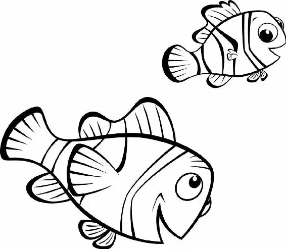

Nemo swam aimlessly through the water, calling for his dad. Suddenly, he heard crying and went to find its source.
He found a fish swimming around in circles, mumbling to herself.
“Um, excuse me,” Nemo said to the fish. “Are you all right?”
“I don’t know where I am. I think I lost somebody, but I can’t remember,” the fish said.
“It’s okay. It’s okay,” Nemo said, gently taking the fish’s fin. “I’m looking for someone, too.”
“I’m Dory,” Dory said, sniffling. “I’m Nemo,” Nemo said.
“Nemo,” Dory said. “That’s a nice name.”
Together, Nemo and Dory began searching.
“Dad! Dad?” Nemo called out.
“Wait a minute,” Dory said. “Is it your dad or my dad?”
“My dad,” replied Nemo. “Got it,” said Dory.
“Where are we, anyway?” asked Nemo. “Hmm,” said Dory. She swam over to a sewage pipe and read the logo. “ ‘Sydney’!” she read.
Suddenly it all came back to her—every bit of her journey with Marlin, and why they had traveled all the way to Sydney.
“Nemo!” she exclaimed, remembering.
“What?” Nemo asked, startled.
“It’s you! You’re Nemo!” Dory cried.
She held his face tightly in her fins. “You were dead. I saw you! And then here you are. I found you! You’re not dead. Your father—”
“You know my father?” Nemo asked excitedly.
Dory didn’t answer. She was too busy thinking. Marlin must be by the crabs, she realized. She headed back toward them. Nemo swam right behind her.
In the fishing grounds, Marlin was swimming around aimlessly, sadly thinking he was never going to see his son again.
“Get out of the way!” yelled a grouper. From above, a giant net was dropping slowly into the ocean.
“Look out!” called another fish. “It’s right behind us!”
The groupers raced past Marlin. “Dad! Dad!” Nemo shouted.
“Nemo?” Marlin said, peering through the murky water.
“Daddy!” called a voice in the distance. Marlin squinted. He could just make out Nemo—and Dory—swimming toward him. He raced to meet them.
“Look out!” Dory and Nemo screamed. The net dropped lower, sweeping up fish after fish. Above, a crank on a fishing boat turned, pulling the net toward the surface, but it missed a small swarm of the fish, including Marlin. “Nemo! No!” Marlin cried.
But the net had also missed Nemo. “Dad!” he yelled. They were safe!
“Nemo! Oh, thank goodness!” Marlin exclaimed, hugging his son.
Then they heard a cry for help from the net. It was Dory! She was caught in the net and it was moving toward the surface.
Nemo looked up at the net and remembered his adventure in the fish tank. “Dad, I know what to do!” he said as he swam toward the net.
Marlin chased after his son. But Nemo had swum between the strands of the net, and Marlin was too big to get through.
“Get out of there! I’m not going to lose you again,” Marlin pleaded.
“We have to tell all the fish to swim down together. I know this will work,” Nemo assured his father. “Dad, I can do this!”
Marlin realized that all he needed was a little trust and faith in his son. He locked eyes with Nemo. “You’re right. I know you can.”
They gave each other a high five. “Remember, tell all the fish to swim down,” Nemo yelled as he headed toward Dory.
“Well, you heard my son!” shouted Marlin. “Come on! Swim down.”
One by one, the groupers stopped to listen. They told other groupers, and soon all the fish in the net began to swim downward.
But the net kept rising. Nemo and Dory were pulled out of the water. They gasped for breath.
“Swim down!” Marlin shouted, this time with more urgency.
The net slowed. For a moment it stayed in place. Then it began to sink.
“It’s working!” Nemo yelled. The weight of all the fish swimming down was pulling the net back into the water.
Nemo and Dory pushed their way to the front where they could see Marlin.
“You’re doing great, son!” Marlin called. “Just keep swimming! Just keep swimming!” Marlin and Dory shouted together.
The fish gave one final giant heave as they neared the ocean floor.
Crack! The crank broke. The net sank. Fish poured out, laughing, crying, swimming away as fast as they could. Marlin swam in the opposite direction from the retreating fish.
“Where’s Nemo?” he asked Dory.
